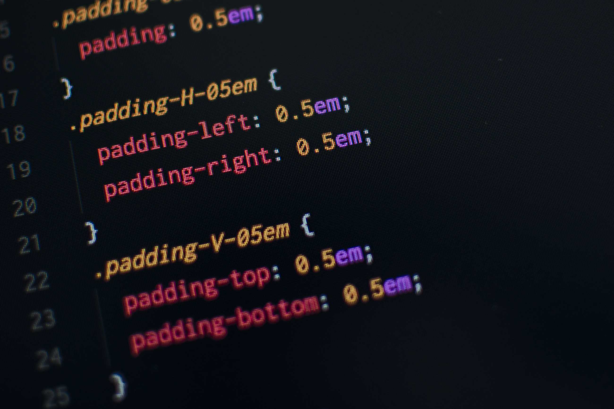

Posted by Igor Kapustin at Nov 24, 2020
The Best Online Graphic Design Tool - MockoFUN
online graphic design tool​ MockoFUN Create beautiful designs using the browser. Graphic design is fun when you’re using MockoFun. Start creating images PHOTO Editor Edit photos online using photo filters and blending modes. You can add a photo mask, photo frames and borders, photo vignette, photo overlays and other cool photo effects. How to blur…
Posted by Igor Kapustin at Nov 24, 2020
Block Links: The Search for a Perfect Solution | CSS-Tricks
I was reading this article by Chris where he talks about block links — you know, like wrapping an entire card element inside an anchor — being a bad idea. It’s bad accessibility because of how it affects screen readers. And it’s bad UX because it prevents simple user tasks, like selecting text.
But maybe there’s something else at play. Maybe it’s less an issue with the pattern than the implementation of it. That led me to believe that this is the time to write follow-up article to see if we can address some of the problems Chris pointed out.
Throughout this post, I’ll use the term “card” to describe a component using the block link pattern. Here’s what we mean by that.
Posted by Igor Kapustin at Nov 24, 2020
Browser cache: what is it and how to clear it on any browser?
If you have already done any activity such as creating a blog or website using WordPress, and needed to make any changes to a plugin or theme that it uses, probably, after doing the tests, the changes have not appeared in the browser. However, before looking for errors in the code, the first recommendation is to always clear the browser cache.
Although the browser cache is an extremely important feature to offer more speed for loading pages on the internet, it must be cleaned with some frequency, precisely because it can cause problems during browsing.
In this post, we will show:
Want to better understand how it works? Come along to find out!
Posted by Igor Kapustin at Nov 24, 2020
HTML5 accessibility
How to Test
Each feature has its own test page, including the pass criteria, and spec references for the required mapping from HTML feature to the platform accessibility layer.
Browser support for a feature is automatically detected. This checks to see if the browser claims it supports the feature via object detection, not if it is fully supported correctly. If a feature is not supported, it is excluded from the scoring.
If a feature is supported, the next step is to test if it is correctly mapped to the platform accessibility layer. This must be tested manually. This can be done with one of the tools listed at the end of this section.
To be accessibly supported, elements that represent interactive controls must be fully keyboard accessible. Actions that must be able to be performed are listed in the test file, but shortcuts may be different between browsers and platforms.
Posted by Igor Kapustin at Nov 24, 2020
A centered CSS navigation with fit-content
Last week I shared a #devsheet covering the CSS width properties min-content, max-content, and fit-content. I recommend having a look if you're not familiar with these CSS properties.
While reading about these underused properties, I discovered a neat pattern to build a centered navigation bar on CSS-Tricks.
The pattern uses fit-content to make the navigation take the exact amount of space to fit in all entries. The list container is then moved into the horizontal center using margin: 1em auto;.
ul {
background: deepskyblue;
padding: 1em;
width: -webkit-fit-content;
width: -moz-fit-content;
width: fit-content;
margin: 1em auto;
}
li {
display: inline-block;
background: tomato;
padding: .5em;
}
If you tried to give a centered navigation bar the exact fitting width paired with a background or border color, you might have already lost some hair on this problem.
Using fit-content is a beautiful solution, and I'm sure I'll reuse this pattern repeatedly in the future!
Posted by Igor Kapustin at Nov 24, 2020
Text symbols - MockoFUN üòé
Over 1000 text symbols that are free to copy and paste. MockoFun is an online text editor with fonts that you can use for free!
Posted by Igor Kapustin at Nov 24, 2020
How to Detect When a Sticky Element Gets Pinned
The need for position: sticky was around for years before it was implemented natively, and I can boast that I implemented it with JavaScript and scroll events for ages. Eventually we got position: sticky, and it works well from a visual perspective, but I wondered how can we determine when the element actually became pinned due to scroll.
We can determine if an element has become sticky thanks to the IntersectionObserver API!
Pinning an element to the top of its container is as easy as one CSS directive:
Posted by Igor Kapustin at Nov 24, 2020
CSS Flexbox Part 3: The end of my adventure with Flexbox Zombies
This is the third part of a blog series describing what I have learned about CSS flexbox by playing an educational game called Flexbox Zombies. If you haven’t read the others yet, you may want to read part 1 and part 2 first.
Posted by Igor Kapustin at Nov 24, 2020
CSS Flexbox Part 2: What (else) I learned from Flexbox Zombies
This is the second part of a blog series describing what I have learned about CSS flexbox by playing an educational game called Flexbox Zombies. You can read part 1 here.
Posted by Igor Kapustin at Nov 24, 2020

CSS Flexbox: What I learned from Flexbox Zombies
I started playing an educational game called Flexbox Zombies, which has been teaching me the fundamentals of flexbox in a fun way. In the game, you fight zombies by using features of flexbox to aim your crossbow at the zombies
Posted by Igor Kapustin at Nov 24, 2020
The difference between aria-label and aria-labelledby - Tink
The aria-label and aria-labelledby attributes do the same thing but in different ways. Sometimes the two attributes are confused and this has unintended results. This post describes the differences between aria-label and aria-labelledby and how to choose the right one.
The aria-label and aria-labelledby attributes are both used to give an element it's accessible name. An element's accessible name is a piece of text that differentiates one instance of that element in a document from the rest; the text of a link or text description for an image for example.br>
The difference between aria-label and aria-labelledby is where they get that piece of text, and the clue is in the name. If you think of the accessible name for an element as its label it becomes more understandable. The aria-label attribute gives an element its label; an element with the aria-labelledby attribute is labelled by something else.
Posted by Igor Kapustin at Nov 24, 2020
I Built A Photo Gallery with CSS Animation: Here’s what I learned
UI/UX | Blogger @blog.greenroots.info| Speaker
The vanilla CSS(without any external JavaScript and CSS libraries) allows animation of HTML elements using CSS properties. This is very powerful and quite simple to learn and use.
As a beginner to CSS animation, I have learned some cool things and made a photo gallery üñºÔ∏è. This article is all about sharing that knowledge with you with a step-by-step approach. Hope you find it useful.
If you are using CSS animation already, read this article for fun. Feel free to comment to let us know some of the tips and tricks you use.
Posted by Igor Kapustin at Nov 24, 2020

Smart slogans for your business from Logaster slogan generator.
How business slogan generator works
Hiring a professional to create a slogan for your business is both costly and time-consuming. Our slogan generator offers you a big selection of amazing slogans. It’s fast and free!
Select your company’s strong points (low prices, premium service, etc.), and our Slogan Maker will generate custom slogans emphasizing your competitive advantages.
Need something more than just a slogan? With our service, you can craft an effective brand identity as well!
Posted by Igor Kapustin at Nov 24, 2020
Create Your Logo and Corporate Identity for Free Online | Logaster
Fast and Simple Branding
Logaster is an online brand identity builder that has helped 9 million of small businesses with a fast, simple and affordable branding solution!
Posted by Igor Kapustin at Nov 01, 2020

Glassmorphism in user interfaces
The base for this entire effect comes from a combination of shadow, transparency and background blur. This style can only use one transparent layer, or multiple, but it’s most prominent and visible when at least two levels of translucency appear on a rather busy, colorful background.
Posted by Igor Kapustin at Nov 24, 2020
9 New 2020 Browser Features You Probably Didn't Know
As 2020 draws to a close, let’s review nine of the best browser features you need to be using!
The web is continually evolving. As web developers, we know this, and, let‚Äôs face it, this is one of the reasons we love our job! üíÅü誂Äç‚ôÄ‚Äç
So, today I’ll be sharing with you the main nine new features that drew my attention this year.
Posted by Igor Kapustin at Nov 24, 2020

Typography hacks: Choosing and Pairing Fonts in UI design
While typography itself is a complex and nuanced subject, there are few great tools and shortcuts that I've found to be really helpful when learning to pair fonts and choose better combinations for your UI designs.
So without going into typography theory here are my favorite typography hacks to help you find, pair and manage fonts for your design projects.
Posted by Igor Kapustin at Nov 24, 2020
10 Practical Web Design Tips for Beginners - Qode Interactive
Typography is more than just a tool that conveys messages. It is one of the most important web design elements that will, in most cases, have a huge impact on your overall project. Depending on their shape, size, color, and weight, typefaces have the power to add a variety of different contexts to your design. What you need to do is ensure they all have the same feel as the featured imagery and that they suit the purpose of a website. For example, if a website is dedicated to hand-made, elegant products, the accompanying fonts need to give off the same vibe. And when it comes to deciding on the number of different typefaces to use per project, we’d recommend going with maximum two or three. If your main font is a hand-written one with lots of curvy serifs, pair it with simpler typefaces. Some font combinations work better than others, so try out several of them until you find the one that best compliments your project. And if you’d like to read more on the subject of typography, check out Toptal’s comprehensive typography guide.
Posted by Igor Kapustin at Nov 24, 2020
Technical Writing for Beginners – An A-Z Guide to Tech Blogging Basics
If you love writing and technology, technical writing could be a suitable career for you. It's also something else you can do if you love tech but don’t really fancy coding all day long.
Technical writing might also be for you if you love learning by teaching others, contributing to open source projects and teaching others how to do so, too, or basically enjoy explaining complex concepts in simple ways through your writing.
Let's dive into the fundamentals and learn about what you should know and consider when getting started with technical writing.
Posted by Igor Kapustin at Nov 24, 2020
What is AVIF? How to Use AV1 Image Format Images on Your Website
The AV1 Image format, or AVIF, is the latest image codec on earth. AVIF is an optimized image format which was created to make our images smaller while keeping the same quality (lossless). The file extension for AVIF is .avif.
In this article, I want to talk about its features and benefits, and why you should start using AVIF. I will also show you the safe way to include AVIF images on your website.
Posted by Igor Kapustin at Nov 24, 2020
#198: About the Position Property | CSS-Tricks
static: the default
relative: allows you to nudge around with top/right/bottom/left, making z-index work, gives you a positioning context
absolute: top/right/bottom/left moves the element to that exact position, otherwise the same as relative
fixed: like absolute, but scrolling the page doesn’t move the element
sticky: like fixed, but it doesn’t become fixed until the page is scrolled past your set threshold
inherit: makes the position values whatever the parent’s position value is
The almanac has more detail.
Posted by Igor Kapustin at Nov 24, 2020
A Dynamically-Sized Sticky Sidebar with HTML and CSS | CSS-Tricks
Creating page content that sticks to the viewport as you scroll, something like a jump-to-anchor menu or section headings, has never been easier. Throw a position: sticky into your CSS ruleset, set the directional offset (e.g. top: 0) and you’re ready to impress your teammates with minimal effort. Check out this CSS-Tricks article to see some real fancy sticky positioning use cases.
But sticky positioning can get a bit tricky, particularly when it comes to height and the dangerous situation of hiding content in a position that can’t be scrolled to. Let me set the stage and show you the problem and how I fixed it.
I recently worked on a desktop layout that we’re all familiar with: a main content area with a sidebar next to it. This particular sidebar contains action items and filters that are pertinent to the main content. As the page section is scrolled, this component remains fixed to the viewport and contextually accessible.
The layout styling was as easy to implement as I had mentioned earlier. But there was a catch: The height of the component would vary based on its content. I could have capped it with a max-height and set overflow-y: auto to make the component content scrollable. This worked well on my laptop screen and my typical viewport height, but in a smaller viewport with less vertical real estate, the sidebar’s height would exceed the viewport.
Posted by Igor Kapustin at Nov 24, 2020
CSS Tricks To Enhance Your Website
In the time that I’ve been building apps and working on personal projects, I’ve grown to appreciate programmers who are adept at styling…
Posted by Igor Kapustin at Nov 24, 2020
Why You Should Master These Four Major Concepts of Front End Development | by Grace Omole | Nov, 2020
After working as a front-end developer for three years, I have been able to summarize what I feel are the four major concepts of front-end development. Knowing and studying these four areas will make you stand out from the crowd.
In this article I’ll discuss the four practical concepts you should focus on to become a better front-end developer.
This is a big part of front-end development that you should take into account when building your sites or apps.
Posted by Igor Kapustin at Nov 24, 2020
Fading Up Sections Using Intersection Observer
In this article, I will show you a way to apply fade up to your page sections, using Intersection Observer + CSS.
First of all, we need to know what is Intersection Observer and what it does. In a few words, Intersection Observer is:
An API that allows to configure a callback whenever an element intersects either the device's viewport or another specified element. That specified element is called the root element or root for the purposes of the Intersection Observer API.
You could take a look at Intersection Observer documentation at: https://developer.mozilla.org/en-US/docs/Web/API/Intersection_Observer_API
Now, knowing how Intersection Observer works, the concept of what we want to implement seems pretty simple. Just watching our sections and whenever they intersect the viewport or a certain element, make it fade up.
Posted by Igor Kapustin at Nov 24, 2020
Tailwind CSS - Rapidly build modern websites without ever leaving your HTML.
A utility-first CSS framework packed with classes like flex, pt-4, text-center and rotate-90 that can be composed to build any design, directly in your markup.
Posted by Igor Kapustin at Nov 24, 2020
Master CSS Grid by Building 5 Layouts in 17 Minutes
I have bad news and good news, the bad news is that CSS Grid is complicated and there are many things to learn. But the good news is we don't need to know everything.
In this tutorial, we will build 5 layouts (which are 5 tasks) with CSS Grid, and at the end of the tutorial, you will be ready to use CSS Grid in your next projects.
Posted by Igor Kapustin at Nov 24, 2020
55 The Most useful websites for web designers- Designer Assets
The best resources for the Designers
Posted by Igor Kapustin at Nov 24, 2020
This CSS Cut Out Effect is Guaranteed to Blow Your Mind ü§Ø
https://daily-dev-tips.com I write daily dev tips to contribute to the development community!
This effect is so cool and just fun to see. What it comes down to is having a background image show through the text.
How it works is that we will have a div that will have the image as a background. On that, we put our text element, using blend-mode it will show through the image.
The result you can see and touch on this Codepen.
Posted by Igor Kapustin at Nov 24, 2020

How to Use SVG Images in CSS and HTML – A Tutorial for Beginners
SVG stands for Scalable Vector Graphics. It is a unique type of image format for vector-based graphics written in Extensible Markup Language (XML).
In this tutorial, I will explain why you'd want to use SVG images and how you can use them in CSS and HTML.